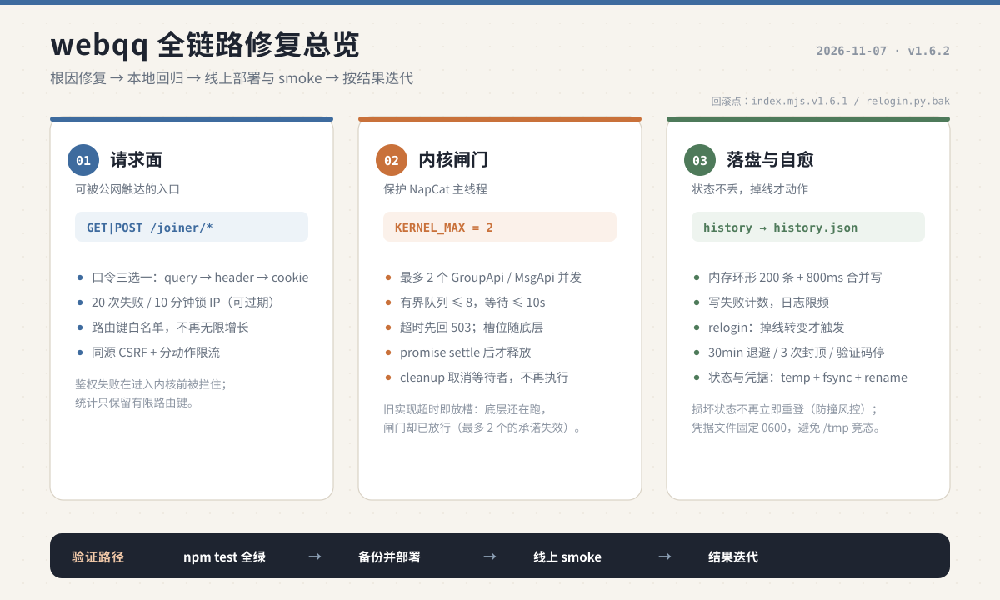
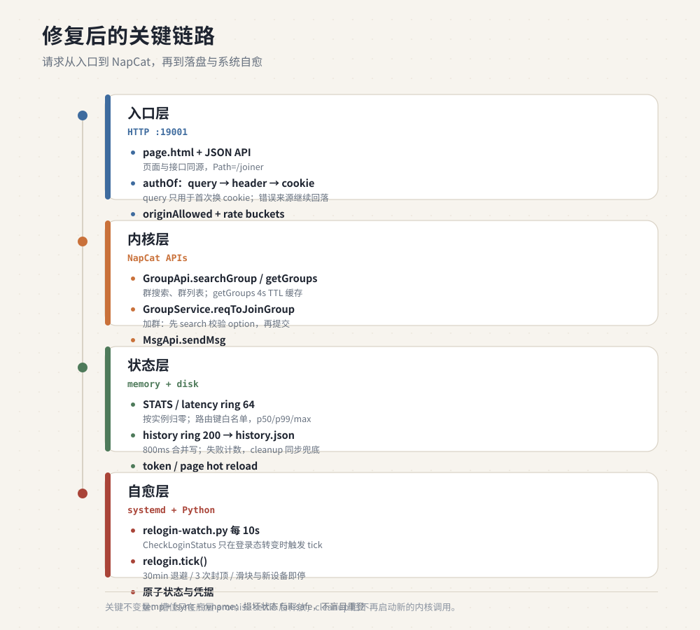
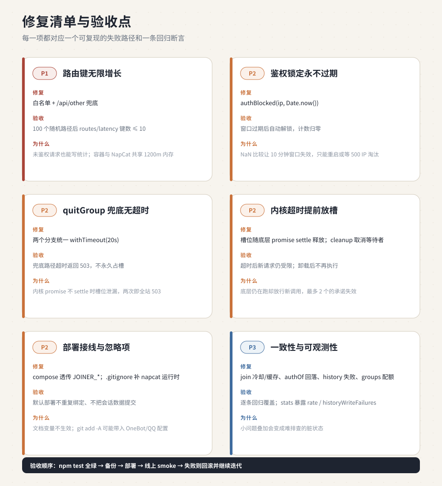

webqq 全链路修复总览 · v1.6.2
根因修复 → 本地回归 → 线上部署与 smoke → 按结果迭代。三张图对应评审结论、修复后链路、逐项验收点。
01 · 修复总览
请求面 / 内核闸门 / 落盘与自愈 —— 三个安全边界各自收敛。

02 · 修复后的关键链路
从入口到 NapCat，再到落盘与系统自愈；核心不变量是槽位只随底层 promise settle 释放。

03 · 修复清单与验收点
每一项对应一个可复现的失败路径与一条回归断言（P1/P2/P3）。

SVG 源文件：
overview.svg
·
architecture.svg
·
findings.svg
（可直接嵌入文档 / 演示）。